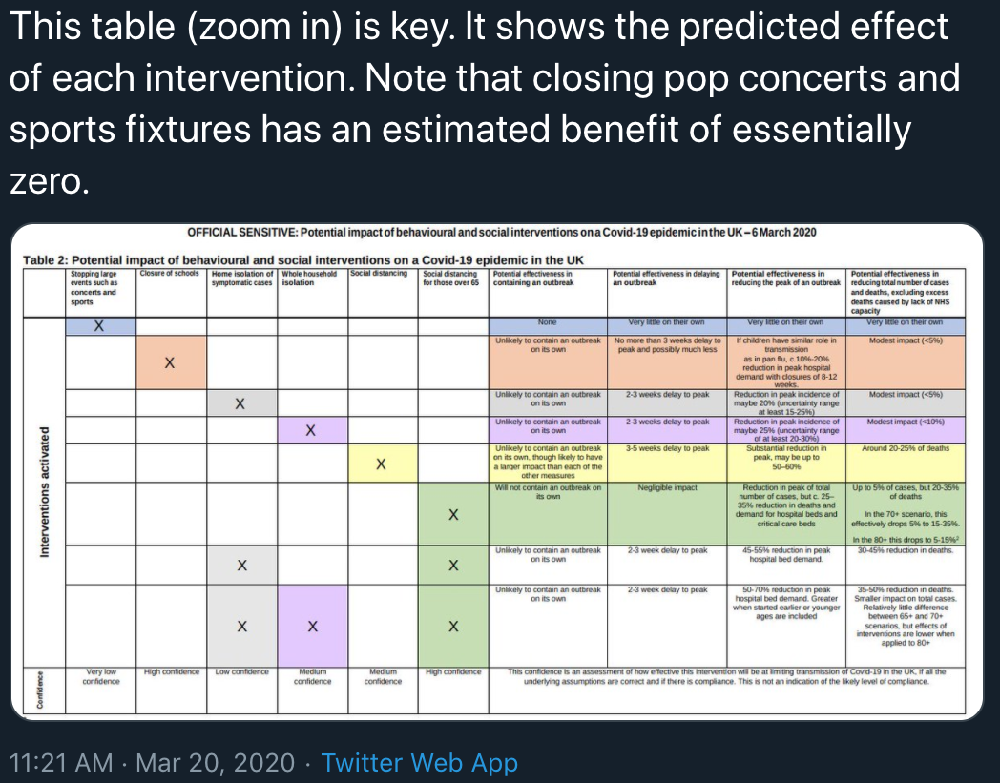
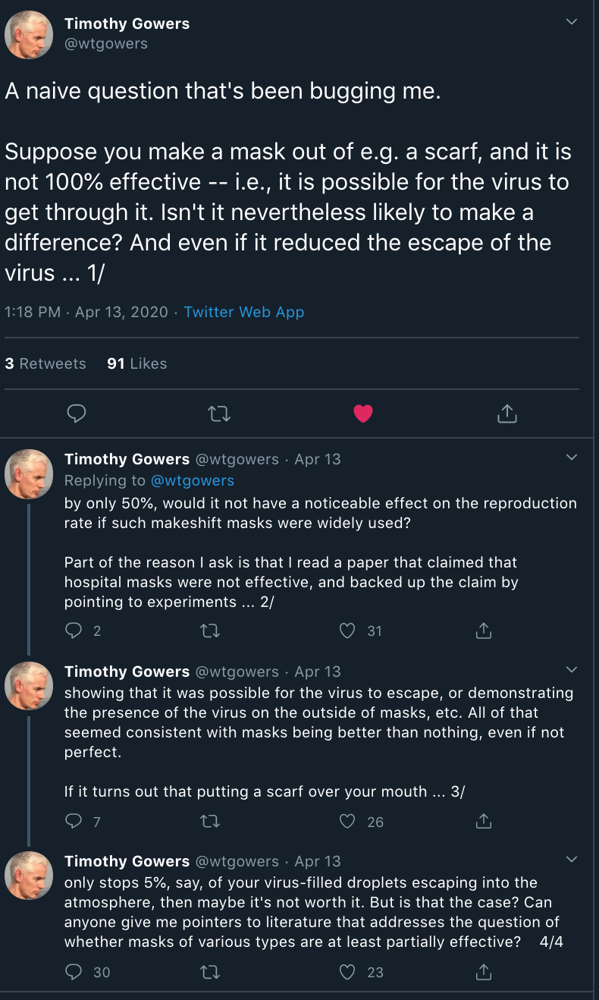

The dangers of seeking false certainty
“X won’t stop COVID on its own” is not an argument against doing X
I recently posted a thread on twitter about virus decay. In it, I explained that it’s a bit misleading to think about SARS-CoV-2 “surviving on plastic for 3 days” because the virus decays exponentially: if you start out with more virus, you’ll have detectable virus around for longer. If you start out with less, it’ll be around for less long.
I thought this was a pretty ho-hum point, but the thread went viral:
A friend asked me about why results from our recent paper on aerosol and surface stability disagreed with those from another study that got press suggesting the virus was "viable on plastic for up to nine days" This gave me a chance to explain a common misconception
— Dylan Morris (isopod/facemask fan account) (@dylanhmorris) April 12, 2020
(THREAD)
In the thread, I explained that one reason I was so leery of stating some absolute time to undectectability was that I didn’t want people to think that 3 days (or any number of days) was a magical threshold. Two days and 23 hours? Danger! Three days? Safe!
When I put it like that, it’s obviously false. Every hour makes you safer, but there’s no magic moment when things switch from definitely dangerous to definitely safe.
But we all crave certainty, especially when the world is frightening and uncertain. And so we all dichotomize, dividing the world into sufficient and insufficient precautions, interventions that will help and those that will not, and so on.
This dichotomization is dangerous. The COVID pandemic has provided many painful examples.
In March, senior British public health officials were deciding whether to close concerts and sporting events, as many countries were doing. In an interview with Prime Minister Boris Johnson, Deputy Chief Medical Officer Dr. Jenny Harries explained why the UK had chosen not to:
In this country, we have expert modelers looking at what we think will happen with the virus. We've looked at what sorts of interventions might help manage this as we go forward, push the peak of the epidemic forward. And in general, those sorts of events and big gatherings are not seen to be something which is going to have a big effect.
The moment happens at 3:20 into this clip:
Dr Jenny Harries, Deputy Chief Medical Officer, came into Downing Street to answer some of the most commonly asked questions on coronavirus. pic.twitter.com/jByRhFFfat
— Boris Johnson #StayHomeSaveLives (@BorisJohnson) March 11, 2020
The day the interview was posted to Johnson’s twitter account was the second day of the Cheltenham Races, a four day series of horse races. More than 60,000 spectators attended each day. Multiple prominent cases of COVID have been traced to it.
I did a double take when I watched the interview (some days later) and heard Harries’s words. The argument was clearly wrong. Closing large events is critical to controling any novel virus. But it’s all the more important with a virus like SARS-CoV-2, which depends heavily upon rare but high impact “superspreading events”—in which one person infects many—to propagate. Superspreading is especially likely at large events like a concert or a sporting event.
But it wasn’t the wrongness of Harries’s argument that struck me. It was that I knew where the wrong argument had come from. I knew who the “expert modelers” were, and I knew that Harries had misunderstood their conclusions. How? Because I had corrected the same misunderstanding before. A few days earlier, I had spotted a British journalist tweeting approvingly about a corpus of policy and planning documents released (under pressure) by the UK Goverment.

I looked. He had misread the report. It said that closing sporting events would do little if nothing else were also done. That is, closing sporting events and concerts could not stop COVID on its own. But the fact that it was not sufficient in no way meant that it was not necessary.
It seems obvious when I say it that way. So why did the journalist misread the report? Why did Harries? Dichotomization. If we divide the world into “stuff that works” and “stuff that doesn’t”, it’s easy to imagine that “X isn’t enough” means “there’s no point in doing X”.
But to quote a great military leader, “it’s a trap!” And once you notice false dichotomous thinking for the first time, you begin to see it everywhere.
Prof. Timothy Gowers has received a Fields Medal, the highest honor for research in mathematics. But he is modest, and raised a good faith question on twitter about facemasks:

He was, of course, not naive. He was correct. The people making the anti-mask argument were engaged in dichotomous thinking: if masks cannot make others perfectly safe from you, there’s no point to them. Rubbish. Nothing, as I constantly tell people, can make us perfectly, 100%, for-certain safe. We’re engaged in a game of risk reduction, not risk elimination. Masks are great tools for risk reduction, even though they cannot eliminate risk.
Examples of dangerous dichotomous thinking about COVID abound. People think that because aerosol-driven superspreading is rare and hard to observe, it cannot happen. It can. They think that because closing schools might not suffice to prevent the spread of COVID, it’s not worth the costs. It may well be. People want certainty. There isn’t certainty at this stage in a pandemic. We must push forward and try to save lives despite our ignorance.
Actually, that’s not quite true. One thing is certain. If, in seeking perfect certainty and perfect safety, we dichotomously reject any measures that are not guaranteed to save us—or guaranteed to save us on their own—the uncertain threat of COVID will become certain catastrophe.
Dylan H. Morris
Postdoctoral Researcher, Ecology & Evolutionary Biology
I’m a Postdoctoral Researcher in Ecology & Evolutionary Biology interested in mathematical biology, virus ecology and evolution, and population genetics